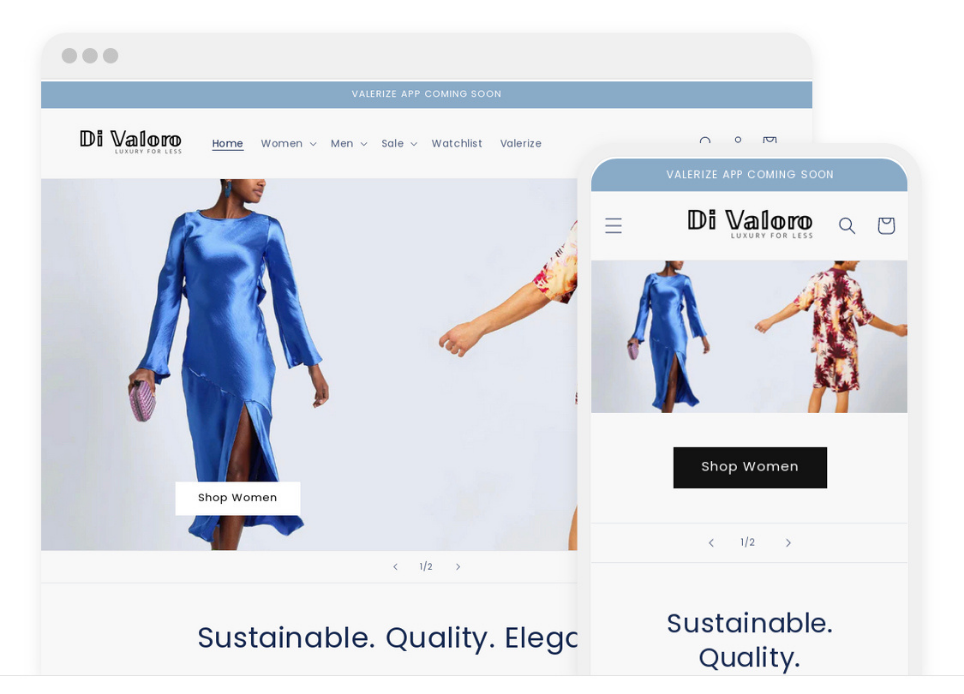

BLU
Transition to SaaS
BLU Blu began as a weekly community event and grew into an internationally recognized festival attracting participants from around the world. As demand increased, the organization identified an opportunity to scale beyond physical events by codifying its methodology into a repeatable system. This evolution transformed Blu from an event-based experience into a globally implemented platform supporting communities worldwide.
Role: Strategy & Operations Lead

Market Targeting & Ecosystem Development
Blue was evaluating competing expansion opportunities in Europe and North America. Given limited organizational resources, leadership needed to determine which market offered the highest potential return on investment and the greatest likelihood of successful adoption. The analysis focused on market attractiveness, community concentration, operational requirements, and long-term scalability. Based on the findings, Europe was selected as the initial rollout market, allowing the organization to maximize impact while minimizing execution risk.
Role: Strategic Finance Business Partner & Analyst

Product Expansion
Following the successful launch of its core community model, Blue entered its next phase of growth and product expansion. Leadership needed to determine which customer segment should be prioritized for future development and investment: individual athletes or fitness studios. With limited resources available, the organization required a structured assessment of market opportunity, adoption potential, scalability, and long-term strategic value before committing resources to product development.
Role: Strategic Finance Business Partner & Analyst
FreshBooks
Debt Financing & Capital Planning
Supported external investor reporting for a $125M Morgan Stanley debt financing facility by standardizing KPI definitions to improve data integrity, developing cohort-based analyses to evaluate customer performance and retention trends, and creating executive-level materials used to communicate business performance to financing stakeholders.
Role: Strategic Finance Business Partner & Analyst
Partnership Renegotiation
FreshBooks partnered with Gusto to provide integrated payroll services under an established commercial agreement. Following organizational changes at Gusto, the economics of the partnership shifted. While the partnership continued to generate strong revenue growth, gross margins steadily declined, indicating that the financial benefits of increased volume were increasingly flowing to Gusto while FreshBooks continued to bear the majority of the commercial and operational risk.
Role: Strategic Finance Business Partner & Analyst
2 Office Closure & Layoff
FreshBooks operated across multiple geographic markets, each exhibiting different customer acquisition costs, growth rates, and profitability profiles. As the company increased its focus on capital efficiency and sustainable growth, leadership sought to determine whether sales and marketing investments were generating acceptable returns across all regions.
Role: Strategic Finance Business Partner & Analyst
Project Management
Di Valoro
Di Valoro is a multi-brand boutique based in Canada specializing in the sale of designer fashion and high end streetwear exclusively made in Italy. It was founded as an e-commerce platform in 2019 and has since expanded with its style concierge service. Di Valoro, an organization focused on sustainable quality fashion, with the vision to reduce the unethical practices and environmental impact of fast fashion.
Role: Project Management, Financial Analyst

User Experience
Valerize
Valerize is a data-driven organization that aims to optimize retail production by specifying consumer needs by their body-type, size, and day-to-day needs. Companies can better forecast demand and allocate resources while consumers receive their exact clothing match, saving time and optimizing their wardrobe.